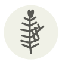

Romarin
Rosemary
| Nom latin | Salvia rosmarinus |
|---|---|
| Famille | Herbes |
| Origine | Garrigue méditerranéenne |
| Saison | Toute l’année |
| Goût | Boisé · Herbacé · Poivré |
| Prix courant | 1,50–3 €/botte |
Ce que c’est
Son nom signifie « rosée de mer », pour les falaises côtières où il s’accroche. Les étudiants grecs portaient des couronnes de romarin en étudiant, persuadés qu’il fortifiait la mémoire — Ophélie confirme : « le romarin, c’est pour le souvenir ».
En cuisine
Ses aiguilles survivent aux longues cuissons où les herbes tendres meurent — glissez une branche sous des pommes de terre ou un agneau au four, retirez-la avant de servir.
S’accorde avec
Agneau Pomme de terre Ail Poulet Huile d’olive Miel Citron
Même espèce
Graine de chia Sauge sclarée Sauge
Entre aussi avec
Agneau de Sisteron Banon Suif de bœuf Pois chiche noir Bœuf Chianina Chevreau
Une erreur ici, ou un oubli ? Dites-le nous